Persia
The People
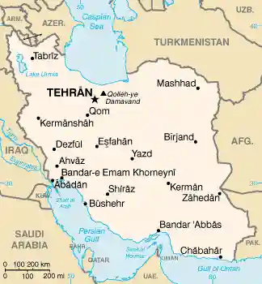
The population of Iran amounts to almost 69 million inhabitants belonging to different ethnic groups, among which Persians, Balochs, Turkmens, Azeris, Lors, Kurds and many others stand out. Within Iranian territory they are accompanied by more than one hundred smaller tribes, among them Afshary, Qashqai and Bakhtiari, each characterised by its own customs and traditions. Part of this world is nomadic and carries with it a vast cultural and linguistic heritage, since every tribe has its own language. The official language spoken in Iran is Farsi, or Persian, belonging to the Indo-European family. It is not uncommon to find words of Persian origin in modern European languages, including Italian itself. For example, father in Farsi sounds like "Pedar" and mother like "Madar". We cannot fail to mention the warmth of a festive and joyful people whose centre of gravity is the value of family and respect for tradition.
Iran is not frozen in a dark past as it is sometimes portrayed by the media, but rather pulses with life and energy, visible in the faces of young people filling internet cafes, gyms, country clubs and parks. The cultural level of the population is very high: the percentage of young graduates is remarkable, especially among women. In particular, one sees an increasingly proud and aware female world, active in work, culture and sport. Iran unites past and present in a way that surprises the attentive visitor: motorways, skyscrapers and underground lines in the great cities stand beside ancient mosques, archaeological sites and vast deserts beneath starry skies where nomadic shepherds still live in brightly coloured tents.
Places to visit
Tehran - Golestan Palace
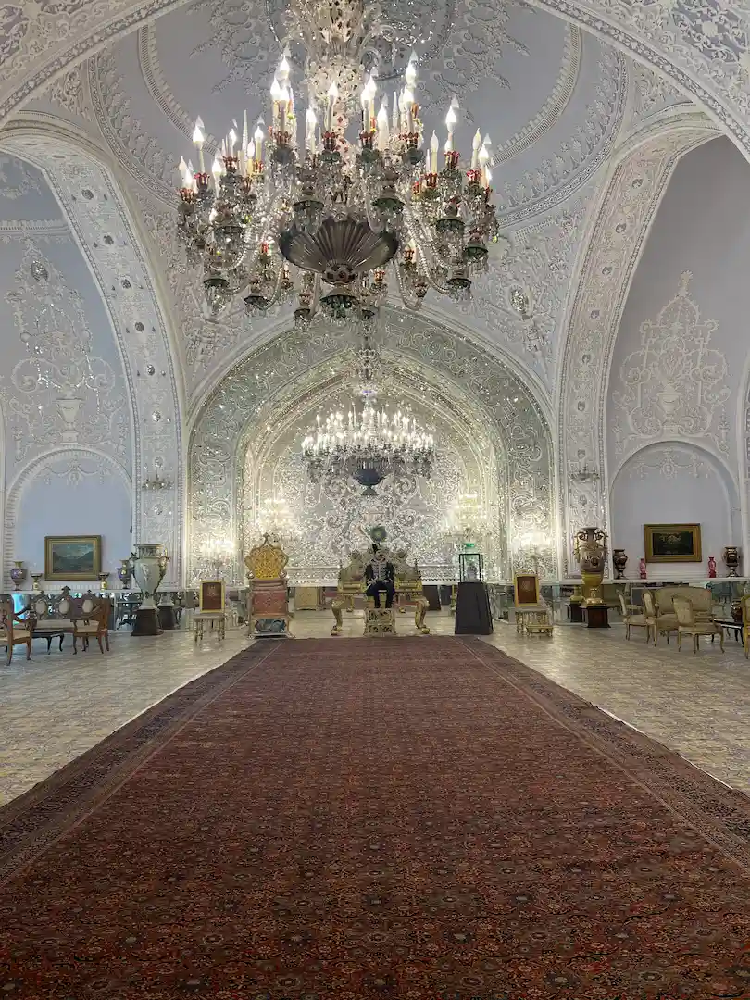
Besides many archaeological sites, Iran is home to museums, galleries, exhibitions and trade fairs; the carpet fair is especially famous, attracting more than 200,000 visitors every year. Tehran presents itself as a dusty and polluted metropolis, a babel of people who live, work and move in chaotic traffic, while grey apartment blocks and towers cling to the hills as evidence of a reckless urban policy.
Tehran - Azadi Tower
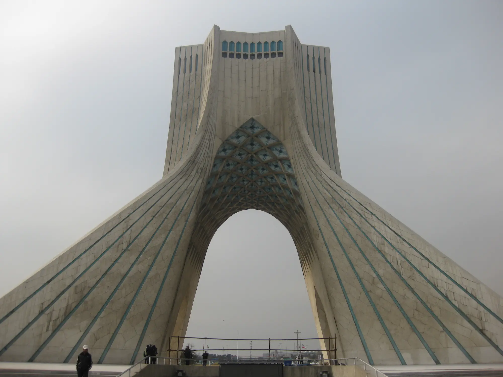
It is the Azadi Tower, located near the airport, that strikes the tourist from the very first aerial view. With its inverted "Y" structure, home to a cultural centre, and its height of more than fifty metres, it has dominated Tehran since 1971, when it was built to commemorate the 2,500 years of the Persian empire. Of great cultural interest for understanding the historical roots of Persian art are specialised museums such as the National Archaeological Museum, the Museum of Decorative Arts, the Carpet Museum, the Glass and Ceramics Museum and the Treasury of Jewels. Some of these museums are housed in important historic palaces, such as the Green Palace and the White Palace, rich in antique carpets and period furniture.
Isfahan - Ali Qapu Palace
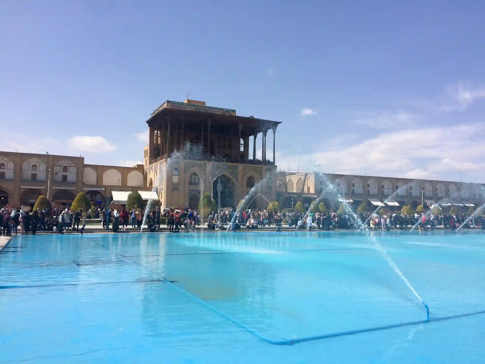
Four hundred kilometres south of Tehran, the political capital of Iran, we reach its cultural capital, Isfahan, which with its nine hundred years of life is the cradle of Persian art. The richest city in monuments on the central Iranian plateau reached its greatest splendour under Shah Abbas around 1600. Considered "half the world" for its seductive beauty, it hosts some of the finest examples of Islamic architecture, parks and beautifully tended gardens, and has always been regarded by Persians as an oasis of greenery and prosperity.
Isfahan - Khaju Bridge
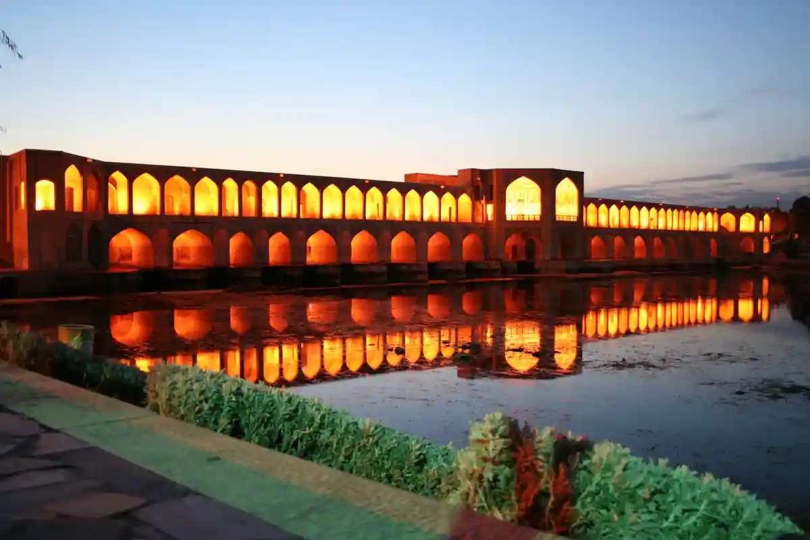
Crossed by the strong waters of the Zayandeh Rud and by the Char Bagh, a broad tree-lined avenue where the main monuments and hotels are found, Isfahan recalls, in its harmony and civic elegance, some of the atmosphere of Florence and Verona: rich in art, history and culture, relaxing in its landscape but lively thanks to tourism and distinctive commercial activity.
Isfahan - Si-o-Se Bridge
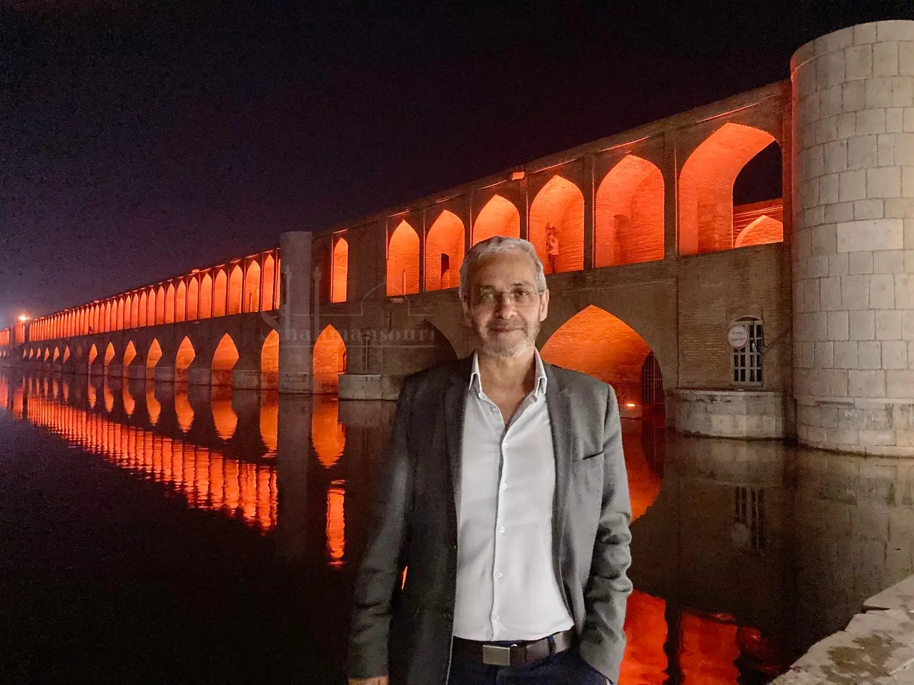
Crossed by the powerful waters of the Zayandeh Rud and by the Char Bagh, a broad shaded avenue lined with monuments and hotels, Isfahan calls to mind cities such as Florence and Verona: rich in art, history and culture, with a relaxed yet lively atmosphere. "Si" or "Se Pol", the bridge of thirty-three arches, and the Khaju Bridge are places where, at dusk, one may sit in a tea house, smoke a nargileh and relax to the sound of running water. Here one discovers the Persians' love of life and their ability to stop and savour fleeting moments. Time is governed by a philosophy that seeks more quality than quantity, one in which pleasure is savoured slowly, as echoed in the famous quatrains of Omar Khayyam.
Isfahan - Imam Mosque
At the heart of the old city lies the Maydan-e Naghsh-e Jahan, a majestic example of urban planning from the early seventeenth century where Isfahan's most precious monuments are concentrated. Once a polo ground, as Isfahan's miniaturists so skilfully portrayed it, it is dominated by the Imam Mosque, one of the great symbols of the city, fabulous and imposing, entirely covered with turquoise faience tiles that take on different shades according to the light of the sun.
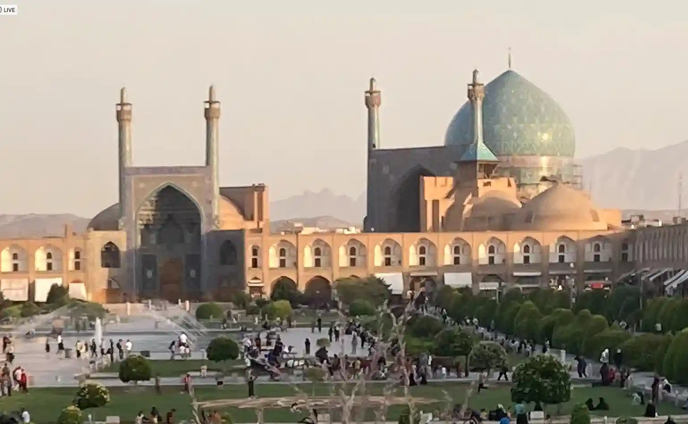
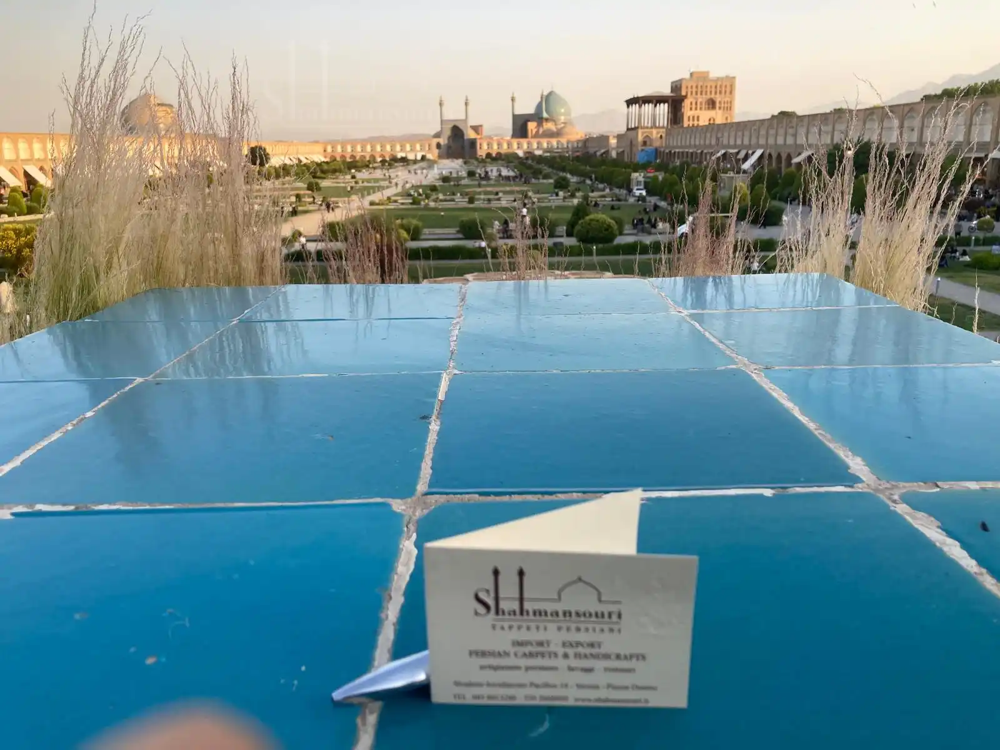
Isfahan - Chehel Sotoun Palace
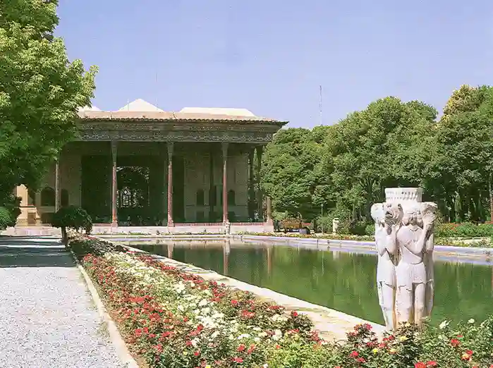
Chehel Sotoun is a majestic building immersed in a lush park rich in frescoes, where Shah Abbas held his court receptions. Its name means forty columns, because the twenty columns of the portico are doubled by their reflection in the pool before the building. The bazaar opens to the north of the square and forms a labyrinth of connected streets organised by trade. Here all our senses are awakened: rare perfumes and precious aromas fill the nostrils, while the eyes are dazzled by countless colours and contrasts. The sound of the engravers' delicate chisels reveals the value of an object entirely fashioned by hand with precision and passion. Art in Isfahan is an important economic resource and offers the finest and most elegant craftsmanship in the country: Khatam inlay, Ghalamkar hand-printed fabrics, as well as chased metalwork, blown glass and ceramics. Ali Qapu, the most important and imposing palace on the square, where authorities watched the games, contains frescoed rooms, period sculpture and music halls.
Isfahan - Vank Cathedral
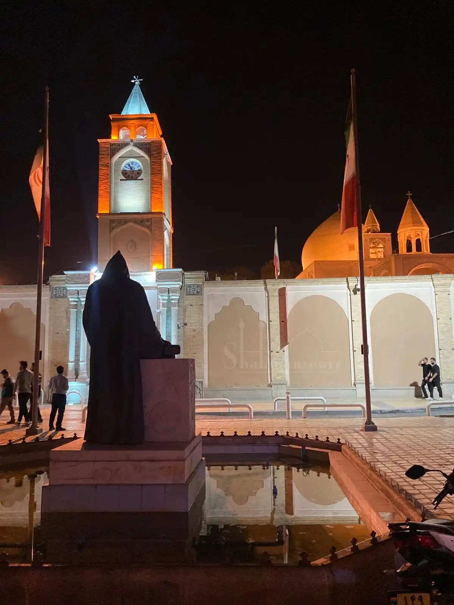
The splendid Vank Cathedral, a reference point for the Christian church in Iran, was founded in 1606 and is richly frescoed with scenes from the Old and New Testaments. Menar Jonban, the shaking minarets, are found in the Armenian district of Jolfa, where by leaning against the walls one can feel the structure gently sway. One should also remember the women's mosque and the Friday mosque.
Shiraz - Persepolis
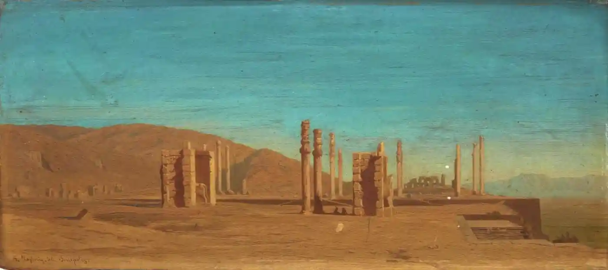
For lovers of history, the province of Shiraz is especially fascinating, as it preserves the remains of ancient Persepolis, the prestigious Achaemenid capital built by Darius I in the sixth century BC. The city rises on a terrace about four hundred metres long dominating the plain below. Anyone fortunate enough to visit it realises that neither Versailles nor other royal palaces move us as deeply as the grandeur of this palace dedicated by Xerxes, son of Darius, to the god Ahura Mazda. The staircase leading to the audience hall, the Apadana, the Gate of Xerxes, the man-headed bulls and the many bas-reliefs of Median and Persian dignitaries and of the guards of King Darius testify to a glorious past, of which sadly only a few badly kept ruins remain.